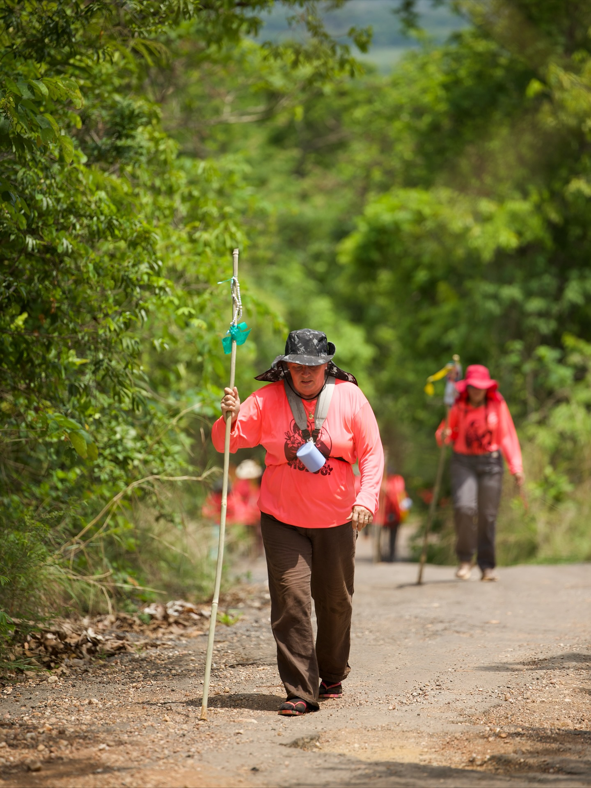
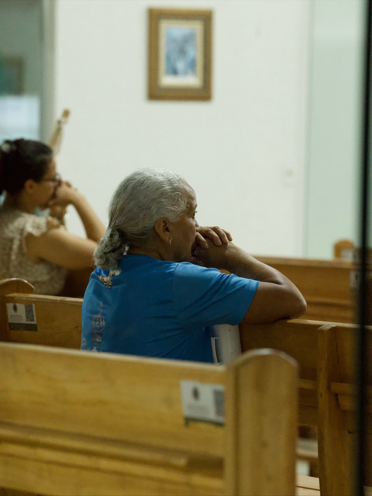
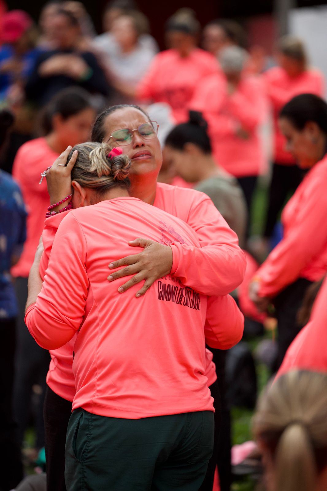
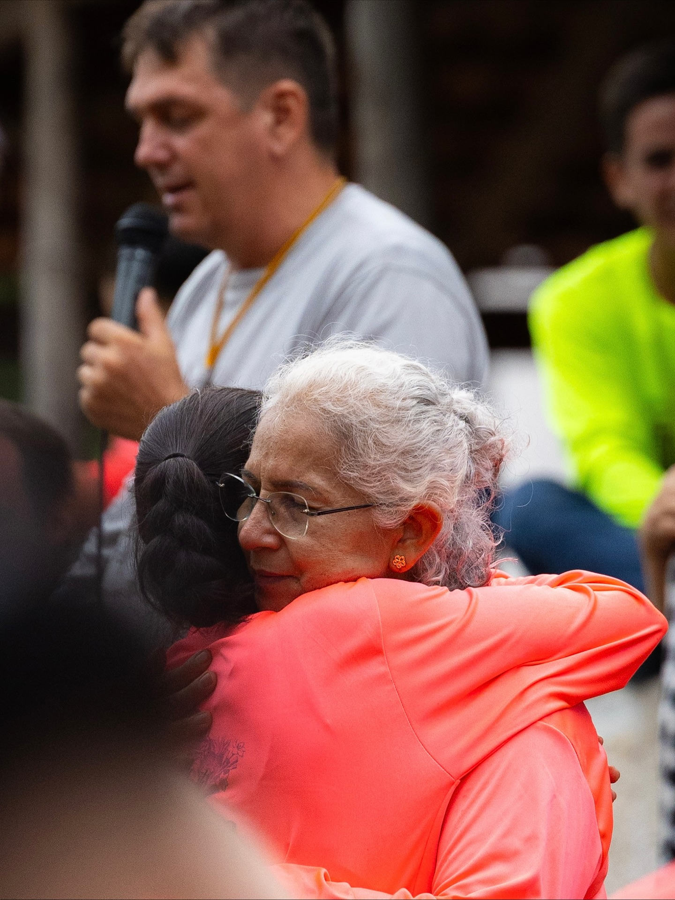
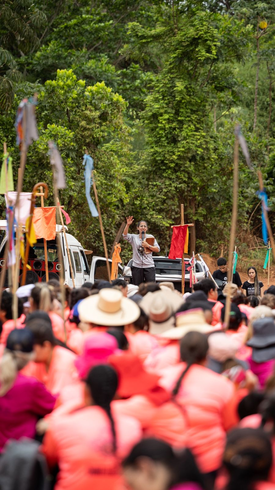
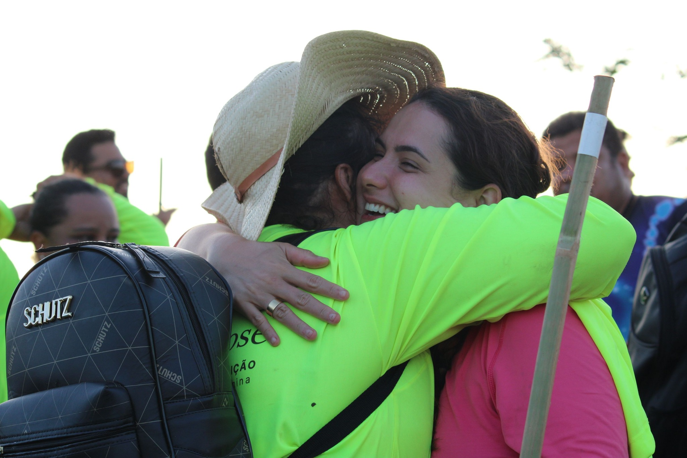
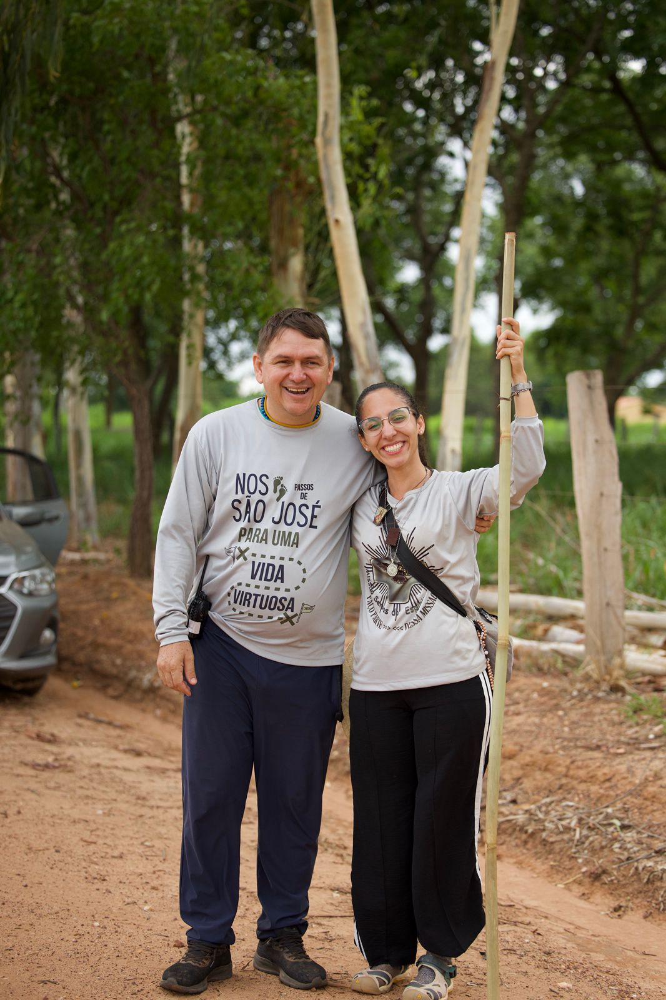
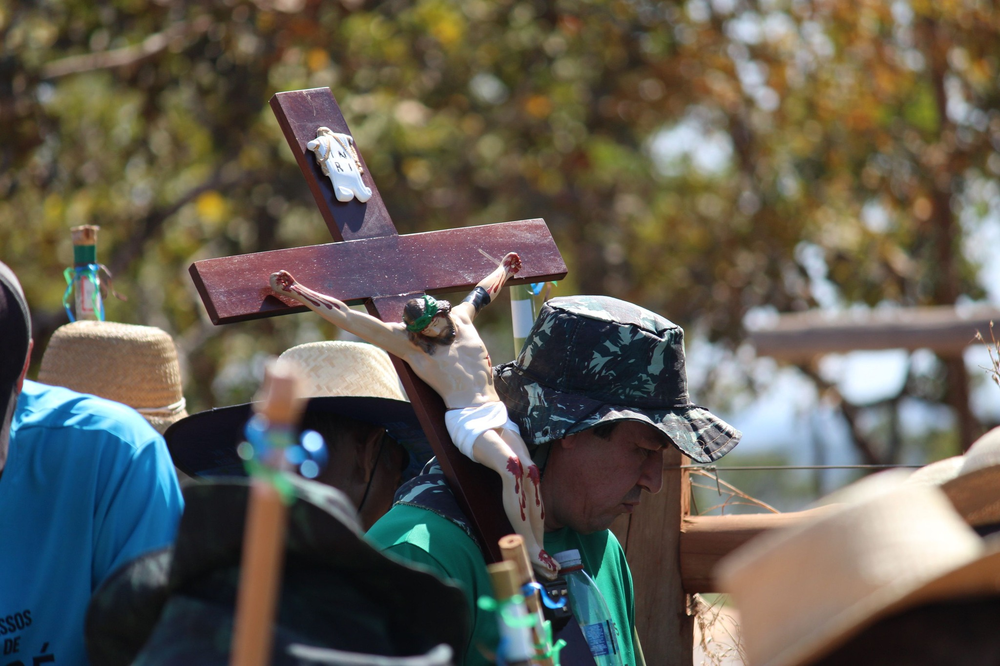
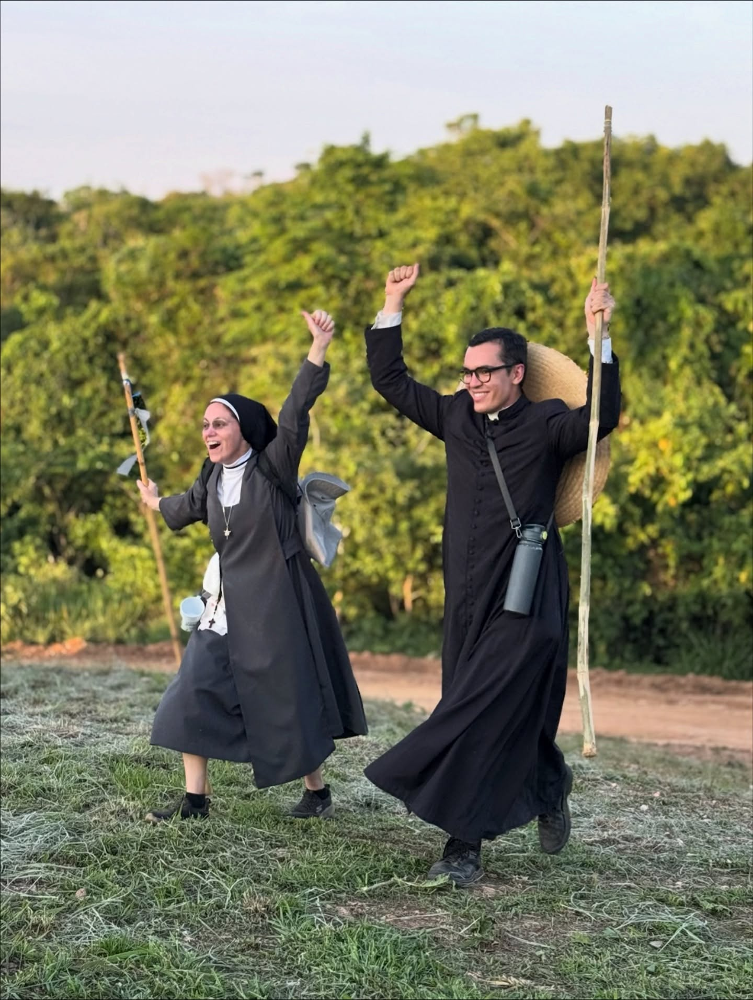

Retiro Itinerante
Caminho de
Caminho de
São José

0
Quilômetros
De silêncio e superação física.
0
Dias
De encontro profundo com Deus.

01
A Partida
Tudo começa na Chácara São José. É o momento de deixar o conforto para trás. Entregamos nossas malas e ficamos apenas com o essencial, confiando que a Providência nos guiará.

03
A Graça
A chegada no Vale de Nossa Senhora Mãe da Divina Providência é o ápice. O cansaço físico dá lugar a uma alegria sobrenatural. É a vitória do espírito sobre a carne.
02
O Trajeto
Não é apenas andar. É rezar com os pés. O silêncio é obrigatório para ouvirmos a voz de Deus. A cada passo no asfalto ou na terra, entregamos nossas intenções amarradas no cajado.

"Vi claramente que este pai e senhor meu me tirou com maior bem do que eu lhe sabia pedir."





